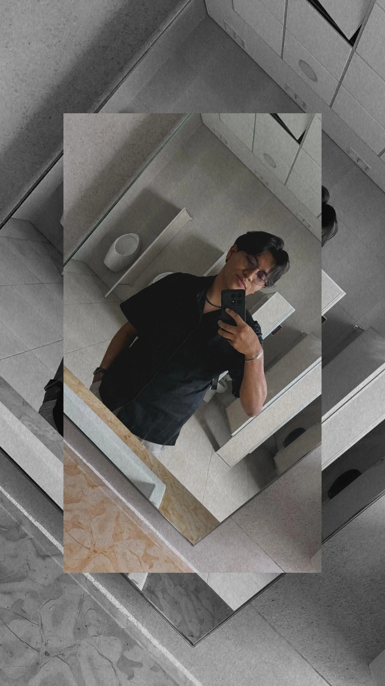

Soy estudiante de la Licenciatura en "Arte y Comunicación Digitales", actualmente curso el quinto semestre de mi carrera. Me gusta mucho la programación y las computadoras, me gustaría dedicarme a la realización de códigos para diferentes usos, ya sea para videojuegos, aplicaciones, etc. También me gustan muchos los deportes como el basquetbol, voleibol, futbol americano y el atletismo. Mi sueño es tener un Honda CIVIC 2016 color verde fosforescente y también un Dodge Attitude 2025, ambos carros tienen aspectos deportivos, y es por eso que me gustan.